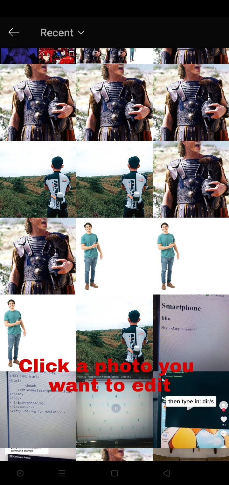
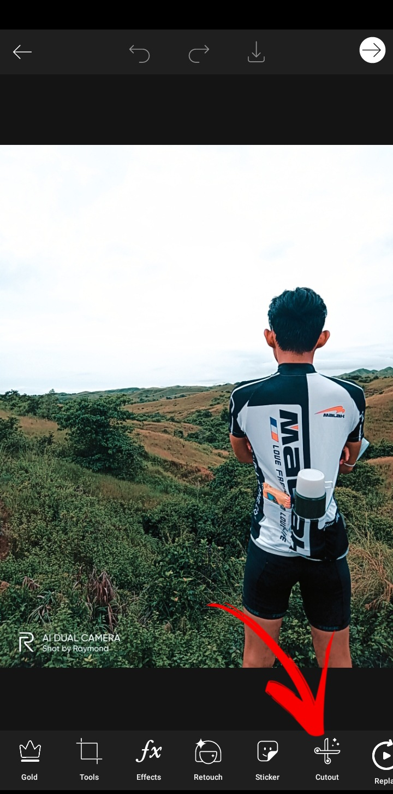
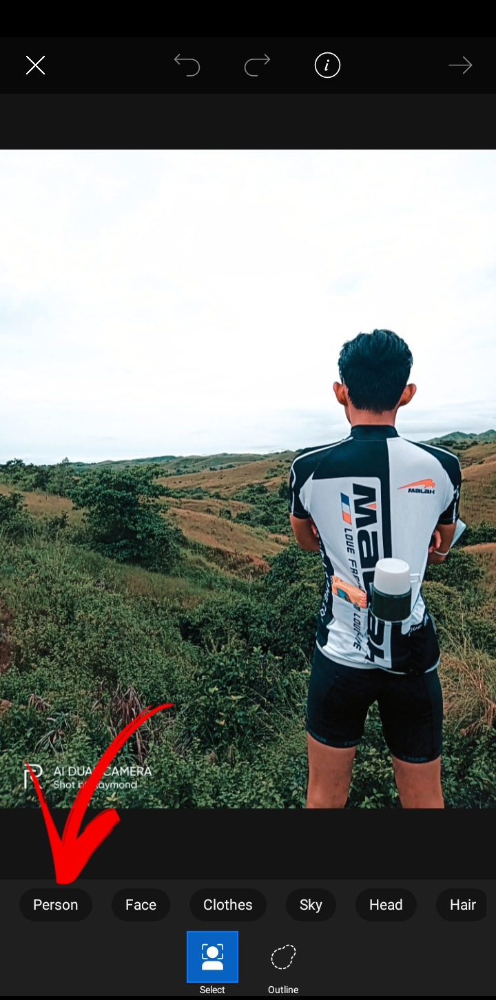
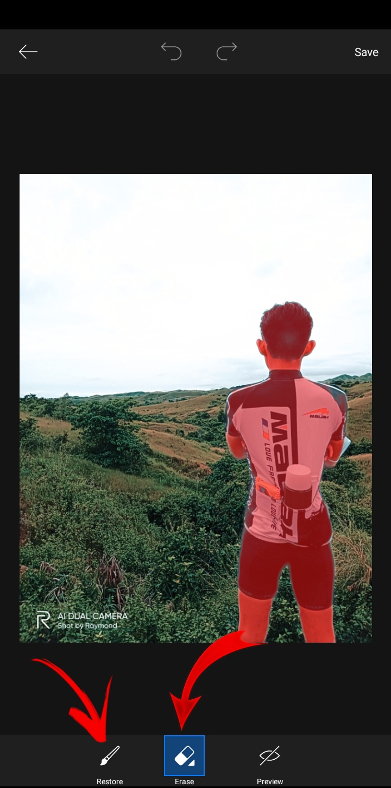
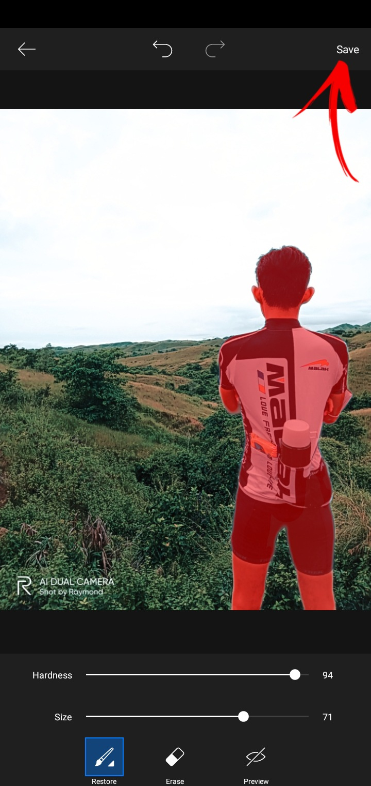
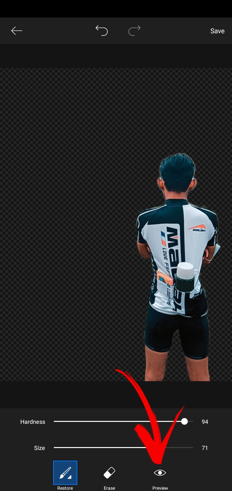

REMEDIT
PICSART ALERT
WANNA LEARN SOME SIMPLE EDITING?
PICK ON THE YELLOW BOX TO PROCEED ON THE STEPS TO FOLLOW.
THE PICTURES BELOW JUST A SAMPLE CLICK ON THE YELLOW BOX FOR THE STEPS TO FOLLOW.
ENJOY MAKE FUN WITH YOUR PHOTOS!!
DOWNLOAD PICSART |
| EYYYY YOWW WHAT'S UPP!!!! BRUHH |
Steps on how to remove a background using Picsart on your andriod.
1.Open the app and tap the plus sign at the bottom to upload your photo.

2.Select a photo you want to remove the background to proceed.

3.At the bottom click on the cutout icon.

4.Select the "Person".

5.Use the "Restore" and "Erase" funtion to remove and restore on some part of the image.

6.Click the preview icon located at buttom of your screen to check if you successfully remove the background.

7.Click the save button at the upper right corner of your screen.

8.Congratulations you sucessfully removed the background of your photo.You can now use it to attach in any background you want.
Members:
-
Emmanuel Christian S. Bacacao
Rhona May G. Pingol
DOWNLOAD PICSART |